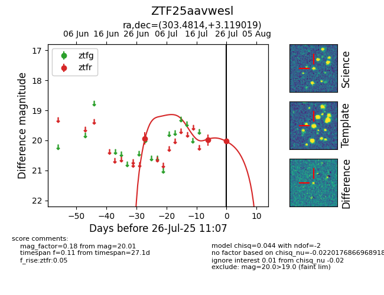

Target ZTF25aavwesl at 2025-07-26 11:07, see:
FINK: fink-portal.org/ZTF25aavwesl
Lasair: lasair-ztf.lsst.ac.uk/objects/ZTF25aavwesl
ALeRCE: alerce.online/object/ZTF25aavwesl
alt names
ZTF25aavwesl (ztf,fink)
coordinates:
equatorial (ra, dec) = (303.4814,+3.11902)
galactic (l, b) = (45.5255,-16.74894)
photometry
last ztfr=20.01
3 ztfr detections
